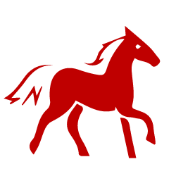

MAIN PAGE

The Horse occupies the seventh position in the Chinese zodiac.
- Lucky Colors: yellow and green
- Lucky Numbers: 2, 3, 7, and numbers containing them (like 23 and 37)
- Lucky Flowers: calla lily and jasmine
- Year of Birth: 1930, 1942, 1954, 1966, 1978, 1990, 2002, 2014, 2026
The Horses’ Personality: Active, Energetic...
People born in a year of the Horse are extremely animated, active and energetic. Horses love to be in a crowd, and they can usually be seen on such occasions as concerts, theater performances, meetings, sporting events, and parties. With a deft sense of humor, Horses are masters of repartee. They love to take center stage and delight audiences everywhere.
Sometimes, the Horse is a little self-centered, but it doesn't mean that s/he can not be interested in others' problems. Horses are really more cunning than intelligent, and that is probably why most Horse people lack real confidence.